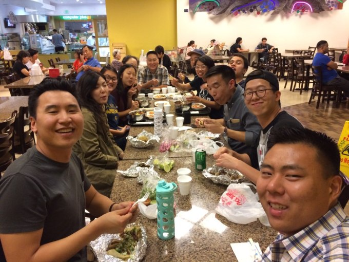
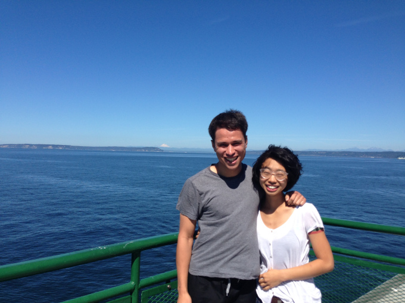
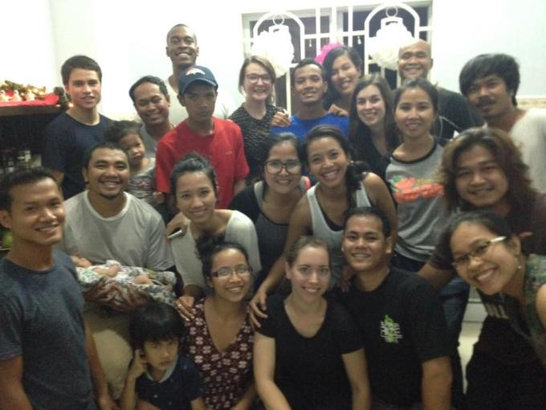
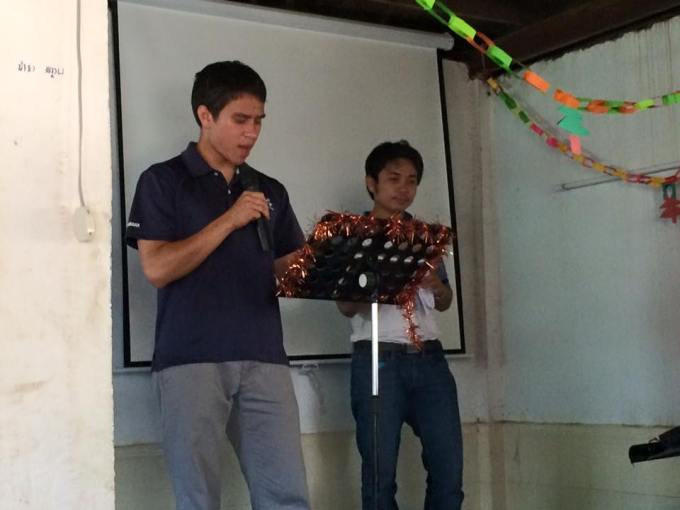
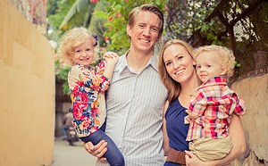

Moving Forward
First of all, I am overwhelmed with gratitude to God for your response to the last email. In the prayers that were offered, in the encouraging emails that were sent, in the several job leads, and in every other way that you have supported the ministry, God has provided for my every need and more.
Current Situation
Shortly after my last update, I began temp work for the Master’s Seminary that will last at least for a couple more weeks. This in itself is a huge answer to prayer, and furthermore a reassurance of God’s provision. Without me even inquiring or applying for the job, the seminary contacted me with the job offer, and before I even signed any papers, the seminary offered a raise. Couldn’t have asked for better timing or a better opportunity!
 I’m also interning at my church until October. As the internship comes to an end, I’m reminded of how much I have been blessed by my time at Valley Bible Church. Not only has it provided financially to help me through seminary, but it has been an opportunity to grow in so many ways.
 Things are still going well with Rebekah. We were able to visit Seattle together in mid-August, and she met my home church in Seattle (Tabernacle Baptist Church) and my friends and family. We presented on Cambodia there. It was a good opportunity to keep them in the loop as well as a good reminder for me of the great need and urgency in Cambodia. We are currently discussing the next step for us. Please pray for wisdom from above in this regard!
Outlook for the Next Several Months
As things currently stand, we do not have enough income from donations in order to do missions in Cambodia unless we work while we are there. Working there (especially during the first year or so) is less than ideal, since it will prevent us from focusing on learning the Cambodian language.
There are many apparent advantages to focusing on language-learning during our first year in Cambodia:
- Until we learn Cambodian, we have two options: (1) Develop friendships and community with English-speakers rather than Cambodian-speakers, or (2) Isolate ourselves from all human relationship. Having already gone through Junior High, I have no desire to experience the second option again. (… Just kidding… Ha ha…ha). However, surrounding ourselves with only English-speakers would only further impair our ability to learn Cambodian.
 - If we are able to get to the point where we can regularly use Cambodian in conversation and everyday life, then at that point our language skill would be able to grow without as much effort dedicated to language-learning.
- Our first year would be most strategic for language-learning, since we would both still be young and could focus on learning the language without the demands that would be there if we had children. This would be especially true for Rebekah, whose time would (and should) be most taken up in raising the children. For this reason, many mothers who are missionaries never gain real proficiency in the local language of the country that they are living in.
- Until we learn Cambodian, we cannot effectively minister to the Cambodian people. If you have ever traveled or lived in a country that did not speak your native language, you know the difficulty that is involved with this, much less the effect that it has on trying to do ministry there.
That being said, I have full confidence in the fact that whatever might seem to be ideal in the present, will not be as good as whatever actually happens. If God is good and God is in control, then I can trust that He will cause all things to work together for the best. This does not just mean that God will fix difficult situations so that they don’t end as badly — it means that difficult situations are part of what God is using to bring about His good plan.
Furthermore, it is worth reminding ourselves that we don’t need money for ministry. We’ve discussed this before, but it bears repeating. Accordingly, my goal in writing this is not for “fundraising,” but rather just to keep you informed on where things stand.
This being the case, I’m currently looking into how I can set things up (by the grace of God) so that if I have to work, perhaps Rebekah won’t, and perhaps I won’t have to work as many hours. One potential option is to try to pick up web development (i.e., computer programming) as a marketable skill that I could use in the States and/or overseas, working remotely. I already have some connections who have gone down this route, but even still, if you have any leads in this regard, please let me know!
During the next couple months, I plan on dedicating a lot of time to seeing if this is a feasible option, while working part-time to pay the bills. Our present goal is to be able to leave by somewhere between April and June 2017. This means that if programming is a viable option, there would still be several months to work on it and begin to get established in the field, or if it turns out that programming is not a viable option, then there is still some time to look for other opportunities.
Please Pray:
 The Wells
- For wisdom for both me and Rebekah, as things continue to move forward
- For the ACTION missionaries in Cambodia for faithfully continuing the work there. Pray especially for the team leader, Nathan Wells, who recently returned with his family from the States and is transitioning back into life in Cambodia.
- For preparations and logistics to get worked out for our departure to Cambodia